Every feature, explained.
Walk through every Trade Copier Ultimate module — what it does, when to turn it on, what to set, and what you'll see on the panel. Use the index below to jump to any feature.
Run three sources in parallel.
Telegram Bot API, Discord webhook, and Bridge mode can all be ON at the same time. Every signal that arrives is parsed by the same engine — duplicates across sources are de-duped automatically.
How each source works
Pick whichever channels carry your signals. Most buyers run Telegram + Bridge so they're covered for both public and private channels.
Telegram Bot API — paste your Bot Token from @BotFather and the Chat ID of the channel/group your provider posts in. The bot must be added to the channel as admin. Free, native, no extra software.
Discord Mode — paste a Discord Webhook URL for the channel you want to read. Works on any free Discord server. Polls every Discord Poll sec seconds.
Bridge Mode — runs the Navigator Command Center app on your PC. Lets you read private Telegram channels (where bots can't be added). The EA polls http://127.0.0.1:<port> — nothing leaves your machine. Download Bridge v6.00 →
| Input | What it controls |
|---|---|
| EnableBotAPIMode | Master switch for Telegram Bot. OFF by default. |
| TelegramBotToken | Token from @BotFather. Keep secret — anyone with it can read your channels. |
| TelegramChatID | Chat/channel ID. Use @userinfobot or the IDBot. |
| TelegramPollSeconds | How often to poll the Bot API. Default 3s. |
| EnableDiscordMode | Master switch for Discord webhook reader. |
| DiscordWebhookURL | Webhook URL of the Discord channel. |
| DiscordPollSeconds | Discord poll interval. Default 5s. |
| EnableBridgeMode | Master switch for Bridge app reader. |
| BridgePort | Local HTTP port the Bridge app listens on. Default 5555. |
| BridgePollMs | Bridge poll interval in milliseconds. Default 1000. |
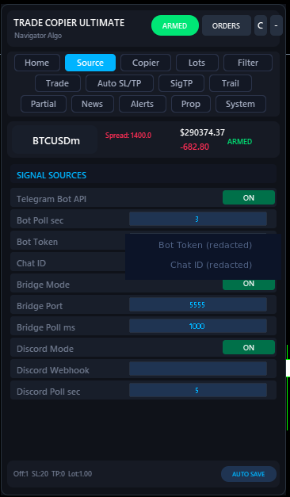
Need to add the WebRequest URLs first? Setup guide step 2 →
Four ways to size a trade.
Use Fixed for absolute control, Risk% for account-aware sizing, Multiplier to scale your provider's lot, or MarketTrade to copy exactly what the signal sends.
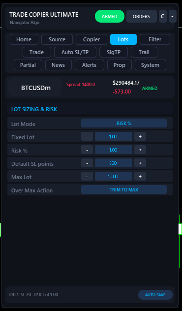
Pick a lot mode that matches your style
Risk% is the safest choice for prop firms and growing accounts. The EA reads your account balance, the signal's SL distance, and computes a lot size that risks exactly your Risk % if SL hits.
If a signal arrives without an SL, the EA falls back to Default SL points for the risk math — so even SL-less signals get sized sanely.
Over Max Action matters: if the computed lot exceeds Max Lot, you can either TRIM TO MAX (open at the cap) or SKIP (refuse the trade). Trim is the default — never skip a signal silently unless you know why.
| Input | What it controls |
|---|---|
| LotMode | FIXED · RISK_PERCENT · MULTIPLIER · MARKET |
| FixedLotSize | Used in FIXED mode. Default 0.01. |
| RiskPercent | % of balance risked per trade in RISK mode. Default 1.0. |
| DefaultSLPoints | Used for risk math when signal has no SL. Default 500. |
| MaxLotSize | Hard cap on calculated lot. Default 10.0. |
| SkipIfLotOverMax | OFF = trim to max. ON = skip the signal entirely. |
| MaxOpenPositions | Cap on concurrent open trades from this EA. Default 20. |
| MaxTradesPerMinute | Circuit breaker against runaway signal storms. 0 = unlimited. |
Different lot per symbol, no rebuild.
Some symbols carry more risk than others. Trade XAUUSD at 0.15, GBPUSDm at 0.50, AUDUSDm at 2.00 — all from one EA, all from a visual editor. Symbols you don't list keep using your Global Lot Mode.
Add, tune, reorder — no input strings to memorize
The Lots tab now ships with a Configure button that opens a dedicated overrides panel. Type a symbol, click Add — TCU validates against MarketWatch and rejects typos before the entry is saved. Suffixed brokers (EURUSDm, XAUUSD.pro) are matched automatically; the panel shows both the typed name and the broker-resolved one so you always know what got matched.
Each row has direct + / - nudges (using your broker's SYMBOL_VOLUME_STEP) AND an editable lot field — click, type, press Enter and the value is normalized + saved instantly. ↑ / ↓ arrows reorder rows; the first matching entry wins, so order = priority. × removes a row. No save buttons, no settings dialog, no restart.
The Lots tab itself shows a live preview of up to ten overrides directly under the Configure button so you can see what's set without opening the modal. The panel footer shows N / 20 active overrides at all times.
New in v6.00 — previously per-symbol lots existed only as a comma-separated input string. The visual editor is fully backward compatible: any settings you saved with the old text-field syntax (EURUSD=0.05, XAUUSD=0.03) load identically.
| Behavior | What it does |
|---|---|
| MarketWatch validation | Symbols not in your MarketWatch are rejected at Add time with a clear banner — never silently ignored. |
| Suffix tolerance | Type XAUUSD, EA matches your broker's XAUUSD.m or XAUUSD.pro automatically. Resolved name shown in parens. |
| Cap | Hard cap of 20 entries. The 21st add attempt banners "Max 20 entries reached". |
| Lot step | + / − buttons step by the broker's SYMBOL_VOLUME_STEP (usually 0.01, sometimes 0.001). |
| Direct edit | Click any lot value, type, press Enter. Auto-normalized to step + clamped to broker volume min/max + Max Lot. |
| Reorder | ↑ / ↓ change priority. First matching entry wins on the runtime hot path. |
| Live preview | Lots tab shows up to 10 overrides (with broker-resolved names) under the Configure button. |
| Persistence | Saved as EURUSD=0.05, XAUUSD=0.03 string in the same settings file as every other input. Restart-safe. |

One signal, three trades, three TPs.
When your signal has TP1 / TP2 / TP3, TCU opens three separate trades, each with its own TP. Lot size is split per the Lot Distribution percentages.
How the split works
A signal like BUY GOLD 2050 / TP 2055 2060 2070 / SL 2045 with Risk% sizing producing 1.0 lot becomes three trades: 0.40 / 0.30 / 0.30 using the default 40,30,30 distribution. Each trade closes independently when its own TP is hit.
Optionally the EA can move SL to breakeven on every position once TP1 closes — turn on SL → BE on TP1. After TP2 closes, you can ratchet again with SL → TP1 on TP2. That's the classic "lock profit, ride the rest" pattern automated.
Pending orders (BUY LIMIT etc.) get the same split treatment when Pending Multi-TP is on — the limit order is placed three times at the same entry, each leg with its own TP.
| Input | What it controls |
|---|---|
| EnableMultiTP | Master switch. ON by default. |
| MaxTPTargets | How many TPs to extract from a signal (1–3). |
| LotDistribution | Volume split per leg, comma-separated. e.g. 40,30,30. |
| EnablePendingMultiTP | Apply same split to BUY/SELL LIMIT/STOP signals. |
| TGMoveSLBreakevenTP1 | Move all open SLs to entry once TP1 closes. |
| TGMoveSLToTP1OnTP2 | Move all open SLs to TP1 price once TP2 closes. |
| TGBreakevenExtraPips | Extra cushion above entry for the BE move. |
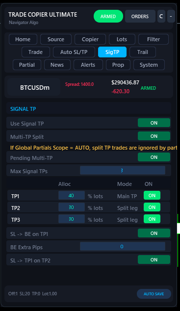
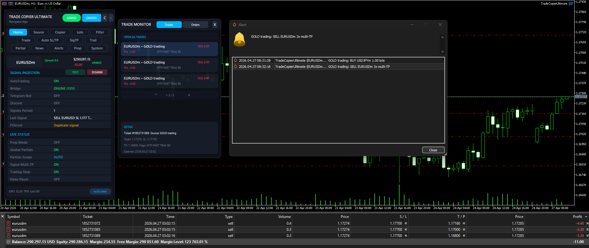
Take some off, let the rest run.
Auto-close a percentage (or fixed lot count) at pip milestones. Optionally move SL to breakeven, TP1, or TP2 as each milestone hits.
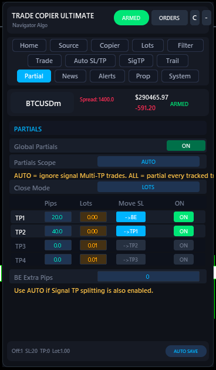
Up to four pip-based milestones
Configure four levels (TP1–TP4): the pip distance at which the partial fires, and either a percentage or a fixed lot count to close. Only filled levels run — leave the rest at zero.
Move SL when partials hit. The most common pattern: TP1 at +20 pips closes 50%, then SL jumps to entry (breakeven). TP2 at +40 pips closes another 50%, SL ratchets to TP1 price. Now you have a position that mathematically can't lose, riding free.
Partials Scope — set to AUTO if you also use Multi-TP splitting. AUTO means partials only run on plain (non-split) trades, so they don't double up. Set to ALL to apply partials to every position the EA tracks.
| Input | What it controls |
|---|---|
| EnablePartialClose | Master switch. OFF by default. |
| PartialCloseMode | PERCENTAGE or LOTS. |
| PartialScope | AUTO ignores Multi-TP split trades. ALL includes them. |
| PartialTP1Pips / Lots / % | First milestone trigger and close size. |
| PartialTP2 / TP3 / TP4 | Up to four levels in total. |
| PartialMoveSLBreakeven | Move SL to entry after TP1 fills. |
| PartialMoveSLToTP1 | Move SL to TP1 price after TP2 fills. |
| PartialMoveSLToTP2 | Move SL to TP2 price after TP3 fills. |
| PartialBEExtraPips | Cushion above entry on the BE move. |
Lock profit, then ride.
Pip-based trailing that activates when a position is in profit. Optional automatic move-to-breakeven the moment trailing kicks in.
Trail with two parameters
Once a position is up by Trail Start pips, the EA starts trailing the SL Trail Distance pips behind price. The SL only moves on every Trail Step pips of new high — so a noisy market doesn't waste broker requests.
If Move To Breakeven is ON, the moment trailing activates the SL also jumps to entry plus BE Buffer pips. From that moment on the trade can't lose, regardless of trail distance.
Trailing only touches positions opened by this EA's magic number — your manual trades are never modified.
| Input | What it controls |
|---|---|
| EnableTrailingStop | Master switch. |
| TrailStartPips | Profit needed before trailing activates. Default 10. |
| TrailDistancePips | How close SL follows price. Default 5. |
| TrailStepPips | Min pip step before SL is moved again. Default 1. |
| TrailMoveToBreakeven | Jump SL to entry+buffer when trailing starts. |
| BreakevenBufferPips | Extra pips above entry for the BE move. |
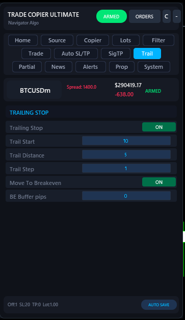
Fill the gaps when the signal doesn't.
Add a fallback SL/TP if the signal didn't include them, plus parse non-standard keyword names from foreign-language or shorthand signal channels.
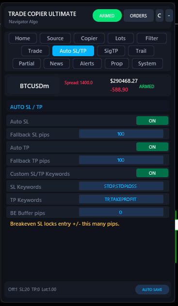
Two ways to handle missing SL/TP
Auto SL / Auto TP — when ON, any signal that arrives without an SL gets Fallback SL pips applied automatically. Same for TP. Use this for channels that send "BUY EURUSD" with nothing else and expect the EA to handle it.
Custom SL/TP keywords — some channels write RISKAT 1.0850 instead of SL 1.0850. Add RISKAT to the SL keyword list and the parser starts recognising it. Comma-separated: STOP,STOPLOSS,RISKAT.
The BE Buffer pips field at the bottom is shared with the trailing module — it's the cushion above entry used by every "move to breakeven" trigger across all features.
| Input | What it controls |
|---|---|
| Auto SL | Apply fallback SL when signal has none. |
| Fallback SL pips | SL distance applied when no SL in signal. |
| Auto TP | Apply fallback TP when signal has none. |
| Fallback TP pips | TP distance applied when no TP in signal. |
| EnableCustomSLTPKeywords | Master switch for custom keyword matching. |
| CustomSLKeywords | e.g. STOP,STOPLOSS,RISKAT |
| CustomTPKeywords | e.g. TP,TAKEPROFIT,TARGET |
How the EA handles every signal.
From pendings to reverse-signal mode to "close all" command parsing — this is where you tune the execution behaviour.
The execution rules in detail
Arm Execution — the master kill-switch. OFF means signals are still parsed, validated, and logged, but no trades fire. Use it during your first day to watch the EA work without risking anything.
Reverse Signal — every BUY becomes a SELL and vice versa. Useful for fading a provider you're confident is wrong (rare, but it happens).
Opposite Action — what to do when a BUY signal arrives while a SELL is open: DO NOTHING (default), CLOSE OPPOSITE, or CLOSE ALL. Pick CLOSE OPPOSITE if your provider treats new signals as flip commands.
Modify Existing — when ON, a same-direction same-symbol signal updates the SL/TP of the open position instead of stacking a second trade. Cleaner for swing-trader providers.
Cooldown min — minimum minutes between accepting two same-direction signals on the same symbol. Cuts noise without disabling duplicates entirely.
| Input | What it controls |
|---|---|
| ArmExecution | Master kill-switch. OFF = parse but don't trade. |
| ReverseSignal | Flip BUY ↔ SELL for every signal. |
| CopySL / CopyTP | Whether to honour SL/TP from the signal text. |
| OppositeAction | DO_NOTHING · CLOSE_OPPOSITE · CLOSE_ALL |
| EnablePendingOrders | Accept BUY/SELL LIMIT/STOP signals. |
| EnablePendingExpiry | Auto-delete unfilled pendings after N hours. |
| PendingExpiryHours | Pending expiry window. Default 24. |
| ModifySLTPIfPositionExists | Update existing position SL/TP instead of stacking. |
| Cooldown min | Min minutes between same-direction signals. |
| Min Same Pips | Min pip difference required for repeat signals. |
| EnableCommandReplies | React to "move sl", "close all", etc. |
| EnableKeywordReplace | Pre-process signal text. e.g. Stoploss=SL |
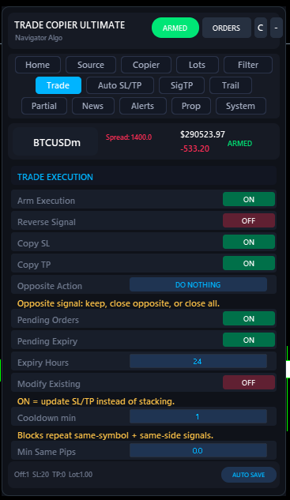
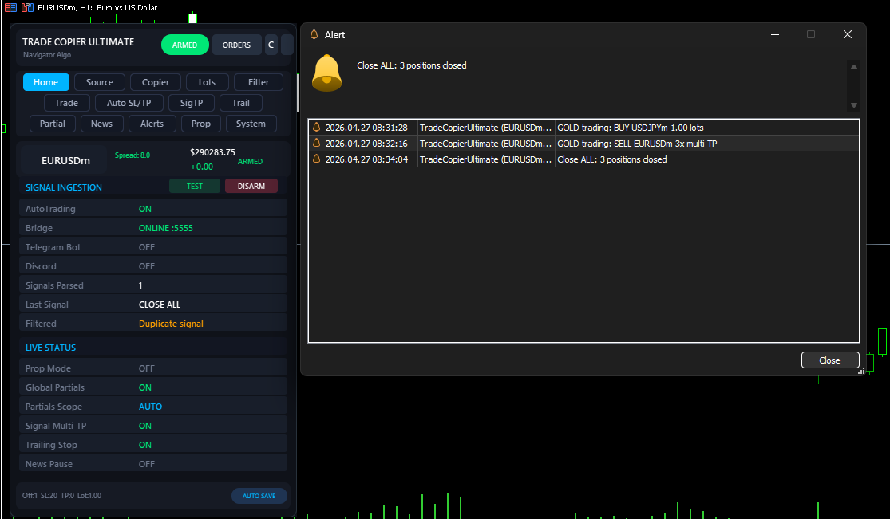
Block bad signals before they hit your account.
Spread filter, time window, whitelist/blacklist, skip-keywords, duplicate detection, and Entry Armour. Layer them — every filter is checked in order.
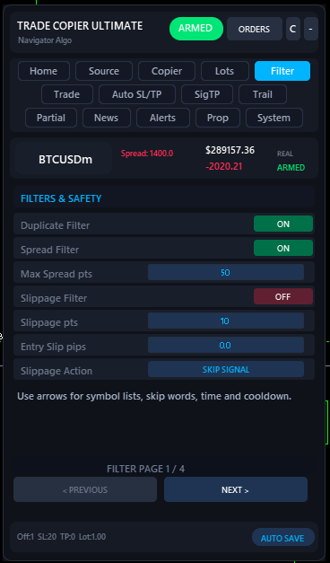
Six filters working together
Duplicate filter — blocks identical signals firing twice. Critical for buyers running both Telegram and Bridge sources where the same message arrives twice.
Spread filter — refuses trades when current spread exceeds Max Spread points. Useful around news and session opens.
Time filter — only accept signals between Start and End server time (e.g. 08:00–22:00). Avoid the rollover spread spike.
Whitelist / Blacklist — restrict to a list of symbols, or block a list. Useful for "Telegram says XAUUSD or nothing" or "never trade USDTRY no matter what".
Skip keywords — drop any signal containing words like test, cancel, delete. Stops your provider's "test123" message from firing a real trade.
Entry Armour — refuses any signal missing required fields (direction, symbol, and either an SL, TP, or explicit entry). Strongly recommended ON for prop accounts. Without armour, a malformed signal could open an SL-less position.
| Input | What it controls |
|---|---|
| EnableDuplicateFilter | Block repeat signals. Strongly recommend ON. |
| EnableSpreadFilter / MaxSpreadPoints | Refuse if spread > X. |
| EnableTimeFilter / StartHour / EndHour | Only trade in your window. |
| EnableWhitelistFilter / Whitelist | Comma-separated symbols, e.g. XAUUSD,EURUSD. |
| EnableBlacklistFilter / Blacklist | Symbols you'll never accept. |
| SkipKeywords | e.g. test,demo,delete,cancel. |
| RequireEntryArmour | Reject signals without the required fields. |
| SkipSignalWithoutSL | Refuse SL-less signals entirely. ON for prop. |
| SkipSignalWithoutTP | Refuse TP-less signals entirely. |
Stand down around news events.
Reads the MT5 economic calendar and pauses new entries during the impact window. Open trades are not affected.
Filter by impact and currency
Pick which currencies to watch (defaults to majors), which impact levels matter (High, Medium, or both), and how many minutes before/after each event to pause. The EA loads the calendar at startup and refreshes on demand.
Look at the Upcoming Events list at the bottom of the tab — that's the live calendar. The Loaded counter shows how many events match your filter for today.
Pause only blocks new entries. Existing positions, trailing, partials, and TPs all keep running. If you need a hard stop including managing open trades, use Prop Mode's daily-loss cap instead.
| Input | What it controls |
|---|---|
| EnableNewsPause | Master switch. |
| NewsPauseBeforeMinutes | Block entries N min before event. |
| NewsPauseAfterMinutes | Resume entries N min after event. |
| NewsPauseHighImpact | Include high-impact events. |
| NewsPauseMediumImpact | Include medium-impact events. |
| NewsPauseCurrencies | Comma list, e.g. USD,EUR,GBP,JPY. |
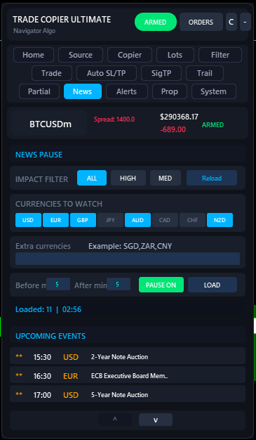
One toggle. Prop-firm rules applied.
Prop Firm Mode forces a stricter set of safety rules globally. Beginner Safe Mode is an even stricter set of caps for first-time users.
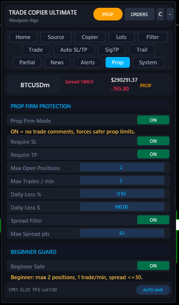
Prop Firm Mode forces every safety rule on
Turn this ON for any FTMO / The Funded Trader / MFF / E8 / etc. account. The header pill turns PROP gold and the EA stops accepting signals that could violate prop rules:
- Forces
Require SL— no SL-less trades, ever. - Caps
Max Open Positionsat the value you set (e.g. 2 for tighter prop accounts). - Hard daily-loss limits in both
%and$terms — once hit, ALL trading stops for the day. EA keeps running, just refuses new entries. - Limits same-symbol stacking and trade frequency.
- Forces the spread filter on so you don't get filled at slippage prop firms hate.
Beginner Safe Mode is a separate, stricter overlay: max 2 positions, max 1 trade per minute, max spread ≤30 points. Turn this on for the first week of using the EA on a real account.
| Input | What it controls |
|---|---|
| PropFirmMode | Master toggle. Forces all the rules below. |
| Require SL / TP | Refuse signals missing either. |
| Max Open Positions | Tight cap. Prop accounts often need 1–3. |
| Max Trades / min | Throttle for trade-frequency rules. |
| Daily Loss % | Halt all trading at this % of starting balance. |
| Daily Loss $ | Halt all trading at this dollar drawdown. |
| Spread Filter / Max Spread pts | Forced ON in prop mode. |
| BeginnerSafeMode | Even stricter overlay for first-time users. |
Copy trades between two MT5 terminals.
Run TCU on your master account, run a second instance on your slave account, both in the same Common folder. Trades sync via a shared CSV file in milliseconds.
Master / Slave roles
Set CopierMode = MASTER on the source MT5 (the one your provider sends signals to). Set CopierMode = SLAVE on every target MT5 you want to copy into. Both must use the same CopierFileName.
The slave can use its own lot mode — copy master's lot exactly, multiply it, use a fixed lot, or risk a percentage of its own balance. Different brokers and account sizes get different sizing automatically.
Auto-close means when the master closes a position (TP/SL/manual), the slave closes its mirror immediately. Critical for prop slaves that must mirror exits exactly.
Same PC only. For cross-PC copying, use one MT5 with the Bridge app or have the master forward signals via Telegram Broadcast (next section).
| Input | What it controls |
|---|---|
| CopierMode | DISABLED · MASTER · SLAVE |
| CopierFileName | Shared CSV. Must match on master + all slaves. |
| CopierAutoClose | Slave closes when master closes. |
| CopierPollMs | Scan speed in ms. Default 50. |
| CopierLotMode | COPY · FIXED · MULTIPLIER · RISK% |
| CopierMaxLot | Hard cap on slave lots. |

Forward your trades to your own channel.
Every trade the EA opens or closes can be pushed to a Telegram channel — useful for your own followers, or to log activity to a private channel you can read on mobile.
Two ways to broadcast
Use the same bot you use for receiving (simpler), or a different sending bot if you want to keep "read" and "write" identities separate. Most signal-channel runners use a separate bot so the source bot doesn't appear to be posting in your output channel.
TelegramSendTag prefixes every message — default [TCU]. Set this to your channel name to brand the messages. TelegramSendSuffix appends custom text to every broadcast (e.g. "@your_channel — copy trades from us").
Forwarding only fires for trades opened or closed by THIS EA's magic number — your manual trades are never broadcast.
| Input | What it controls |
|---|---|
| EnableTelegramSend | Master switch for forwarding. |
| TelegramSendTag | Prefix on every broadcast. Default [TCU]. |
| TelegramSendSuffix | Custom text appended (channel name, hashtag). |
| UseSeparateSendBot | Use a different bot for sending vs reading. |
| SendBotToken | Bot token for sending (if separate). |
| SendChatID | Chat/channel ID where to broadcast. |
Know what the EA is doing.
Every trade event fires a native MT5 alert. The Trade Monitor popup gives you a live list of every position the EA is tracking, with one-click access to details.
Click Orders in the panel header to open the Trade Monitor. It lists every position opened by THIS EA's magic number, grouped by source channel. Click a row → detail popup with ticket, source, open price, SL, flags (MTP, PART, TRAIL, BE), and timestamps.
Native MT5 alerts fire for: signal received, signal filtered (with reason), trade opened, trade closed, partial close, trailing activation, news pause, daily loss cap hit, errors. Open the Terminal → Alerts tab to see the running log. Push notifications and email work too — configure them in MT5's Tools → Options → Notifications.
Coexistence, logging, profile control.
Magic number, symbol-suffix mapping, diagnostic logging, and settings persistence. The mostly-ignored tab that becomes critical when something goes wrong.
What lives in System tab
Magic Number — every trade the EA places is tagged with this number. Change it ONLY if you run multiple TCU instances on the same account (give each a unique magic). Otherwise leave at 333333.
Symbol Suffix — if your broker uses EURUSDm or EURUSD.cash, set m or .cash here. The EA appends it to every signal symbol automatically. Saves you setting up CustomMappings for every pair.
Diagnostic Log — when ON, every signal, parse decision, filter check, and trade attempt is written to MQL5/Files/Common/TCU_STRESS_Log.txt. Send this file to support and we can replay your exact session. Costs ~5 KB per signal — fine to leave on permanently.
Report Log — separate human-readable activity report. Auto-purges entries older than Report Purge Days.
Every panel change auto-saves the moment you press Enter — there's no "save" button. Settings survive MT5 restarts. The EA always reboots in DISARMED state regardless of how it was last set, so a crash never resumes live trading without your explicit ARM click.
| Input | What it controls |
|---|---|
| MagicNumber | EA's tag on every trade. Default 333333. |
| SymbolSuffix | Append to every signal symbol (e.g. m, .cash). |
| CustomMappings | Per-symbol overrides. e.g. GOLD=XAUUSD,SILVER=XAGUSD |
| EnableDiagLog | Full signal trace log. Recommended ON. |
| DiagLogFileName | Log filename in MQL5/Files/Common. |
| EnableReportLog | Activity report file. |
| ReportPurgeDays | Auto-prune old report entries. |
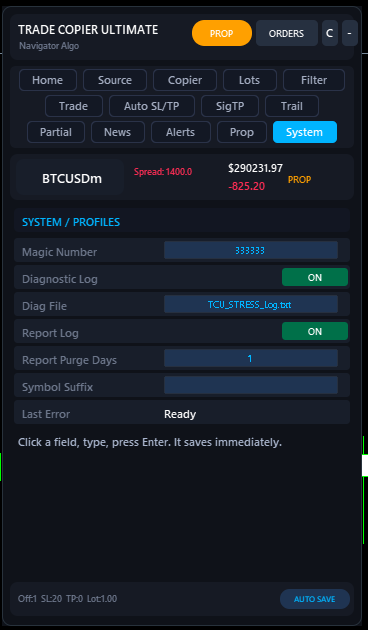
Test on demo. Every time.
Always test on a demo account before going live. Behaviour differs between Hedging and Netting accounts; broker symbol suffixes differ; some brokers ban scalping or partial closes. Verify the feature works on your specific broker before risking capital.
Past performance of any signal source does not guarantee future results. Demo versions from MQL5 run only inside the Strategy Tester — for end-to-end live testing on a demo broker, use the paid version on a demo MT5 login.